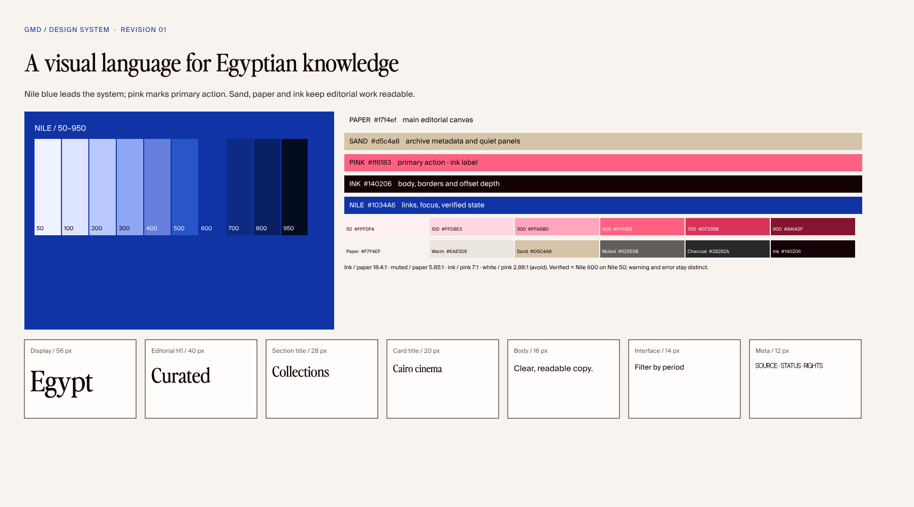
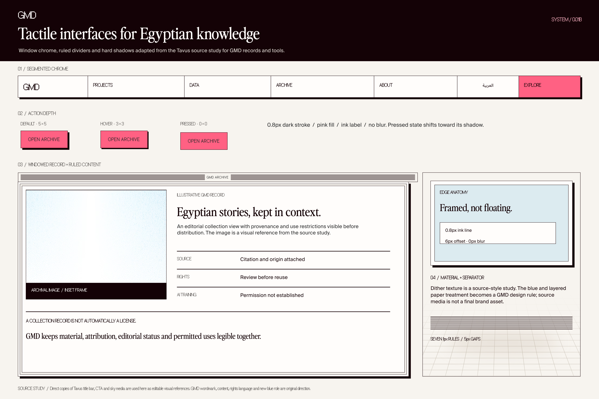
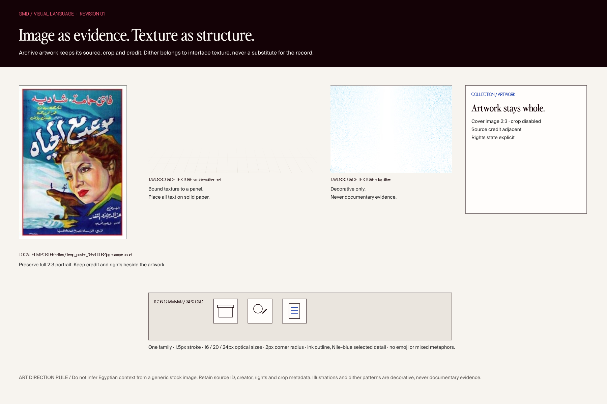

Color and type Pen node XgYOW
Blue, pink, sand and neutral ramps; semantic use and contrast; full type scale.

Depth and separators Pen node JXFyT
Copied source navigation, striped window bar, source hard-shadow CTA and interaction states.

Image and icon direction Pen node N71po2
Local Film poster sample, source dither fields, bounded texture use and a consistent icon grammar. Poster inclusion documents visual treatment; it does not establish image rights.
